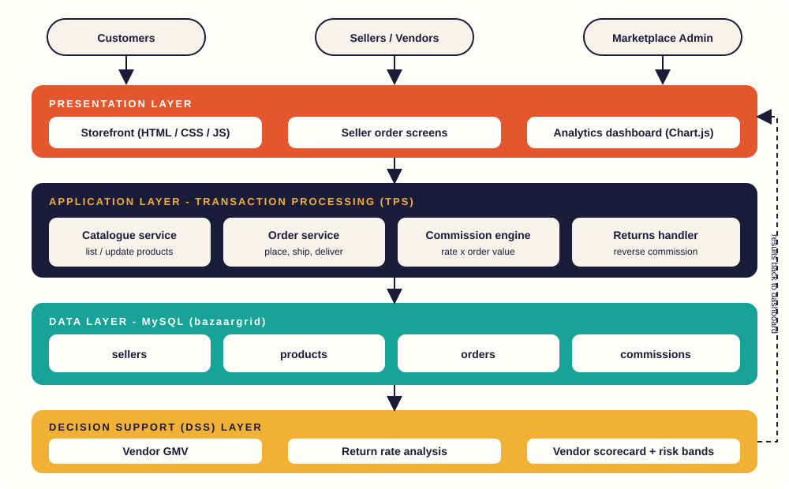

01
Vendor GMV
Rank sellers by the total value of orders sold, and compare gross against net GMV after returns.
Multi-Vendor Online Marketplace System
Process orders from many independent sellers in one place, then see which vendors drive Gross Merchandise Value and which ones send the most returns back.
Decision Support
Filter by month, category or vendor to see GMV, commissions and return behaviour update instantly.
About the project
BazaarGrid is a multi-vendor marketplace built as an E-Commerce / Transaction Processing System (TPS). Sellers list products, customers place orders, and the platform records a commission on every completed sale.
Four MySQL tables hold the transactions: Sellers, Products, Orders and Commissions. A Decision Support layer reads them to report each vendor's Gross Merchandise Value and return rate, so the marketplace team can reward strong sellers and coach risky ones.
Project capabilities
Operational transactions plus the analytics that make sense of them.
Rank sellers by the total value of orders sold, and compare gross against net GMV after returns.
Track returned versus completed orders per vendor, with High, Medium and Low risk bands.
See platform earnings and what is paid, pending or reversed because of a return.
Follow every order from Placed to Shipped, Delivered, Returned or Cancelled.
Understand which product categories contribute the most GMV to the marketplace.
Find out why items come back, such as defects, size issues or wrong items, and act on it.
Core MySQL tables
Four input tables drive every number on the dashboard.
Red = primary key · Blue = foreign key. Run database/schema.sql then database/seed.sql to build it in MySQL.
System design
A layered design from the customer's browser down to the MySQL tables, with a Decision Support layer reading the same data.

Project technology